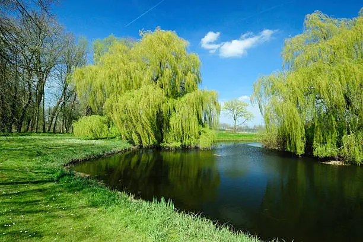

Your wedding deserves more than a day.
Experience a wedding hereHistoric barn. Four ceremony settings. An Inn for the people closest to you. Eight acres that become yours.
Explore the estate →Come for the place.
Stay for the whole story.
A wedding here is not a room rental with a pretty view. It is getting ready at the Inn, choosing your own ceremony landscape, gathering beneath the barn lights, stepping outside for a bonfire, and, if you choose the weekend, waking up here the next morning.

Not one backdrop.
An entire property.
Woods, water, gardens, meadow, covered bridge, barn and Inn. The property gives each part of the day a different setting without asking your guests to leave.
Tour the property →Four ways
to say I do.
Each ceremony setting has a different feeling. See the landscape, understand the atmosphere and arrive at your tour already knowing which one you want to stand in.


See the wedding
before the tour.
This is the digital first tour. Move through the day and see how the estate works as one connected experience.
Choose a moment
Interactive concept experience


The night before.
The morning of.
The morning after.
Three bedrooms, two queens and one king, sleeping up to six. The Inn is part getting-ready space, part overnight stay and part reason the Full Weekend feels like a weekend.
Step inside the Inn →And then,
everyone arrives.
The site changes pace here. Ceremony gives way to champagne, dinner, dancing and firelight. The wedding should feel alive online before a couple ever walks through the doors.


Yesterday’s flowers. Fresh coffee. No rush to leave just yet.